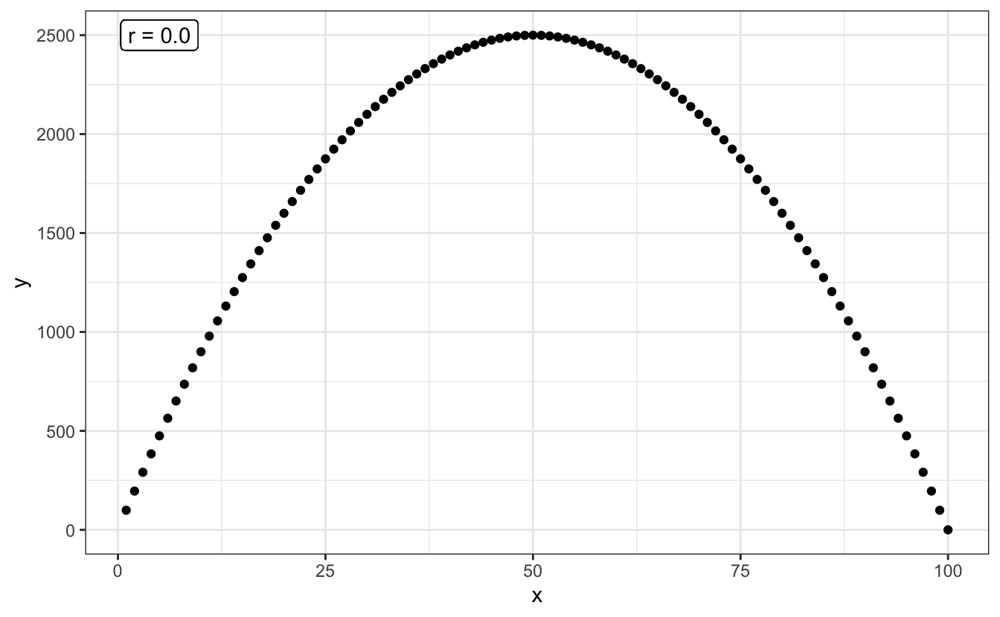

5 Séance 4 : corrélations et régressions
5.1 Packages et données
Comme dans tous les chapitres de cet ouvrage, nous aurons besoin ici du tidyverse et du package skimr. Noubliez pas de les charger en mémoire avant d’aller plus loin.
Vous aurez également besoin des jeux de données suivants, disponibles sur l’ENT ou directement téléchargeables depuis ce document :
5.2 Corrélation
5.2.1 Principe
Lorsque des variables numériques sont associées ont dit qu’elles sont corrélées. Par exemple, la taille du cerveau et la taille du corps sont corrélées positivement parmi les espèces de mammifères. Les espèces de grande taille ont tendance à avoir un cerveau plus grand et les petites espèces ont tendance à avoir un cerveau plus petit.
Le coefficient de corrélation est la quantité qui décrit la force et la direction de l’association entre deux variables numériques mesurées sur un échantillon de sujets ou d’unités d’observation. La corrélation reflète la quantité de dispersion dans un nuage de points entre deux variables. Contrairement à la régression linéaire, la corrélation n’ajuste aucune droite à des données et ne permet donc pas de mesurer à quel point le changement d’une variable entraîne un changement rapide ou lent de l’autre variable.
Ainsi, sur la figure ci-dessous, le coefficient de corrélation entre X et Y est le même pour les deux graphiques : il vaut 1.

Ici, le coefficient de corrélation (noté \(r\)) vaut 1 dans les deux cas, car tous les points sont alignés sur une droite. La pente de la droite n’influence en rien la valeur de corrélation. En revanche, la dispersion des points autour d’une droite parfaite a une influence :

Plus la dispersion autour d’une droite parfaite sera grande, plus la corrélation sera faible. C’est la raison pour laquelle lorsque l’on parle de “corrélation”, on sous-entend généralement corrélation linéaire. Ainsi, 2 variables peuvent avoir une relation très forte, mais un coefficient de corrélation nul, si leur relation n’est pas linéaire :
L’exploration graphique de vos données devrait donc toujours être une priorité. Calculer un coefficient de corrélation nul ou très faible ne signifie par pour autant une absence de relation entre les 2 variables numériques étudiées. Cela peut signifier une relation non linéaire. La solution la plus simple pour distinguer une relation telle que celle du graphique précédent, et une absence de relation telle que celle présentée dans le graphique ci-dessous, est l’examen visuel des données :

En bref, le coefficient de corrélation \(r\) est compris entre -1 et +1 :
- Une forte valeur absolue (\(r\) proche de -1 ou +1), indique une relation presque linéaire.
- Une faible valeur absolue indique soit une absence de relation, soit une relation non linéaire (la visualisation graphique permet généralement d’en savoir plus).
- Une valeur positive indique qu’une augmentation de la première variable est associée à une augmentation de la seconde variable.
- Une valeur négative indique qu’une augmentation de la première variable est associée à une diminution de la seconde variable.
Dans la suite de ce chapitre, nous allons voir comment calculer le coefficient de corrélation entre 2 variables numériques, et puisque nous travaillons avec des échantillons, ce calcul sera nécessairement entaché d’incertitude. Tout comme la moyenne ou la variance d’un échantillon, la corrélation est un paramètre des populations dont nous ne pourrons qu’estimer la valeur. Toute estimation de corrélation devra donc être encadrée par un intervalle d’incertitude, généralement, il s’agit de l’intervalle de confiance à 95% de la corrélation. Enfin, outre l’estimation de la valeur de la corrélation et de son incertitude, nous pourrons aussi faire des tests d’hypothèses au sujet des corrélations que nous estimerons.
5.2.2 Exploration préalable des données
5.2.2.1 Importation et examen visuel
Les adultes qui infligent des mauvais traitements à leurs enfants ont souvent été maltraités dans leur enfance. Une telle relation exsite-t-elle également chez d’autres espèces animales, chez qui cette relation pourrait être étudiée plus facilement ? Müller et al. (2011) ont étudié cette possibilité chez le fou de Grant (Sula granti), un oiseau marin colonial vivant entre autres aux Galápagos. Les jeunes laissés au nid sans attention parentale reçoivent fréquemment la visite d’autres oiseaux, qui se comportent souvent de manière agressive à leur encontre. Les chercheurs ont compté le nombre de ces visites dans le nid de 24 poussins dotés d’une bague d’identification individuelle. Ces 24 individus ont ensuite été suivis à l’âge adulte, lorsqu’ils sont à leur tour devenus parents. Les données récoltées par les chercheurs figurent dans le fichier birds.csv. Importez ces données dans R dans un objet noté birds.
# A tibble: 24 × 2
nVisitsNestling futureBehavior
<dbl> <dbl>
1 1 -0.8
2 7 -0.92
3 15 -0.8
4 4 -0.46
5 11 -0.47
6 14 -0.46
7 23 -0.23
8 14 -0.16
9 9 -0.23
10 5 -0.23
# … with 14 more rowsLa première colonne de ce tableau indique, pour chaque individu suivi, le nombre de visites reçues au nid de la part d’adultes agressifs lorsqu’ils étaient poussins. La seconde colonne indique, pour ces mêmes individus devenus adultes, le nombre de visites agressives effectuées à des nids d’autres poussins. Ce nombre n’est pas dans la même unité que la première variable car il a été corrigé par d’autres variables d’intérêt pour les chercheurs.
Il manque à ce tableau une variable indiquant le code des individus. Elle n’est pas indispensable, mais la rajouter est une bonne habitude à prendre pour toujours travailler avec des “données rangées” :
# A tibble: 24 × 3
nVisitsNestling futureBehavior ID
<dbl> <dbl> <fct>
1 1 -0.8 1
2 7 -0.92 2
3 15 -0.8 3
4 4 -0.46 4
5 11 -0.47 5
6 14 -0.46 6
7 23 -0.23 7
8 14 -0.16 8
9 9 -0.23 9
10 5 -0.23 10
# … with 14 more rows5.2.2.2 Statistiques descriptives
Comme toujours, la première chose à faire est d’examiner quelques statistiques descriptives pour se faire une idée de la forme des données et pour repérer les éventuelles données manquantes ou aberrantes.
── Data Summary ────────────────────────
Values
Name birds
Number of rows 24
Number of columns 3
_______________________
Column type frequency:
factor 1
numeric 2
________________________
Group variables None
── Variable type: factor ───────────────────────────────────────────────────────
skim_variable n_missing complete_rate ordered n_unique top_counts
1 ID 0 1 FALSE 24 1: 1, 2: 1, 3: 1, 4: 1
── Variable type: numeric ──────────────────────────────────────────────────────
skim_variable n_missing complete_rate mean sd p0 p25 p50 p75
1 nVisitsNestling 0 1 13.1 7.21 1 8.75 13 15.8
2 futureBehavior 0 1 -0.119 0.374 -0.92 -0.288 -0.1 0.182
p100 hist
1 31 ▅▇▅▃▁
2 0.39 ▂▂▃▂▇Outre le facteur ID que nous venons de créer, nous disposons donc de 2 variables numériques qui ne contiennent pas de données manquantes.
- La variable
nVisitsNestling, qui indique le nombre de visites agressives reçues par les individus suivis lorsqu’ils étaient de jeunes poussins, varie de 1 à 31, pour une moyenne de 13.12, une médiane proche (13) mais un écart-type important. - La variable
futureBehaviorvarie de -0.92 à 0.39, avec une moyenne et une médiane proche de 0 (-0.12 et -0.1 respectivement).
À ce stade, il est possible de calculer le coefficient de corrélation linéaire entre les 2 variables :
nVisitsNestling futureBehavior
nVisitsNestling 1.0000000 0.5337225
futureBehavior 0.5337225 1.0000000Le résultat est obtenu sous la forme d’une matrice symétrique :
- Sur la diagonale, les corrélations valent 1 (le coefficient de corrélation d’une variable avec elle-même vaut toujours 1).
- En dehors de la diagonale, on trouve le coefficient de corrélation linéaire entre les 2 variables d’intérêt. Ici, il est positif et vaut 0.534, ce qui est une valeur relativement élevée dans le domaine de la biologie ou de l’écologie.
5.2.2.3 Exploration graphique
Afin de savoir si la valeur moyenne de \(r\) calculée précédemment reflète une relation linéaire mais moyenne, ou une relation qui n’est pas vraiment linéaire, nous devons faire un nuage de points :
birds %>%
ggplot(aes(x = nVisitsNestling, y = futureBehavior)) +
geom_point() +
labs(x = "Nombre de visites reçues par le poussin",
y = "Comportement futur") +
theme_bw()On constate ici que la corrélation moyenne obtenue plus haut est due au fait que les points sont assez dispersés, et non au fait que la relation n’est pas linéaire. On peut donc dire que la relation, si elle existe, n’est pas parfaite. Le comportement des individus devenus adultes semble donc en partie lié au nombre de visites agessives qu’ils ont reçues étant jeunes, mais ce n’est certainement pas le seul facteur influençant leur comportement. Un test d’hypothèses devrait nous permettre de déterminer si la corrélation linéaire observée ici est significativement différente de 0 ou non.
5.2.3 Le test paramétrique
Comme pour la plupart des grandeurs calculées à partir d’un échantillon, la corrélation \(r\) n’est qu’un estimateur de la corrélation qui existe réellement entre ces deux variables dans la population générale. Dans la population générale, la corrélation linéaire est généralement notée \(\rho\). Son estimateur, \(r\) est donc souvent noté \(\hat{\rho}\).
Le test d’hypothèses que nous allons faire maintenant permet de vérifier si le coefficient de corrélation \(\rho\) dans la population générale est différent de 0 ou non. Les hypothèses de ce test sont les suivantes :
- H\(_0\) : le coefficient de corrélation entre les deux variables étudiées vaut 0 dans la population générale (\(\rho = 0\)).
- H\(_1\) : le coefficient de corrélation entre les deux variables étudiées est différent de 0 dans la population générale (\(\rho \neq 0\)).
Ce test est réalisé dans R grâce à la fonction cor.test().
5.2.3.1 Résultats du test et interprétation
Pearson's product-moment correlation
data: birds$nVisitsNestling and birds$futureBehavior
t = 2.9603, df = 22, p-value = 0.007229
alternative hypothesis: true correlation is not equal to 0
95 percent confidence interval:
0.1660840 0.7710999
sample estimates:
cor
0.5337225 Le test réalisé ici est le test de corrélation de Pearson. Il s’agit d’un test paramétrique dont les conditions d’application sont expliquées plus bas. Comme pour tous les tests examinés jusqu’ici, les premières lignes des résultats fournissent toutes les informations utiles au sujet du test. Ici, on peut dire :
Au seuil \(\alpha = 0.05\), le test de corrélation de Pearson a permis de rejeter l’hypothèse nulle selon laquelle le nombre de visites agressives au nid des poussins et leur futur comportement agressif sont indépendants (\(t = 2.96\), \(ddl = 22\), \(p = 0.007\)).
Ce test prouve donc que \(\rho\) est significativement différent de 0. La valeur de 0.53 observée ici n’est pas due au hasard de l’échantillonnage.
Comme toujours, les résultats du test que nous avons réalisé ne nous disent rien de la valeur de la corrélation estimée, ni de son incertitude. Il nous faut pour cela examiner les autres lignes fournies par R lorsque nous faisons ce test et qui relèvent de l’estimation (voir section suivante).
Dernière chose concernant ce test, nous avons fait ici un test bilatéral comme nous le rappelle cette ligne des résultats :
alternative hypothesis: true correlation is not equal to 0
Comme pour les tests de comparaisons de moyennes, il est possible de réaliser un test unilatéral, à condition que cela ait un sens, à condition que nous soyons en mesure d’expliquer le choix de notre hypothèse alternative. La syntaxe est la même que pour les tests de Student ou de Wilcoxon : on utilise l’argument alternative = "less" ou alternative = "greater" au moment de faire le test, selon l’hypothèse que l’on souhaite tester.
Ici, si les hypothèses que nous souhaitons tester sont les suivantes :
- H\(_0\) : le coefficient de corrélation entre les deux variables étudiées vaut 0 dans la population générale (\(\rho = 0\))
- H\(_1\) : le coefficient de corrélation entre les deux variables étudiées est positif dans la population générale (\(\rho > 0\))
On utilise la syntaxe suivante :
Pearson's product-moment correlation
data: birds$nVisitsNestling and birds$futureBehavior
t = 2.9603, df = 22, p-value = 0.003615
alternative hypothesis: true correlation is greater than 0
95 percent confidence interval:
0.2320921 1.0000000
sample estimates:
cor
0.5337225 Comme pour les autres test unilatéraux, le choix d’une hypothèse alternative aberrante se traduit par une \(p-\)value très forte, généralement égale à (ou très proche de) 1.
5.2.3.2 Estimation et intervalle de confiance
Revenons à notre test bilatéral. La section “estimation” des résultats de ce test nous indique que la meilleure estimation du coefficient de corrélation linéaire de Pearson dans la population générale vaut \(\hat{\rho} = 0.533\). C’est la valeur que nous avions calculé à la main avec la fonction cor().
L’intervalle de confiance à 95% de cette valeur estimée est également fourni. La conclusion de cette procédure pourrait donc être formulée de la façon suivante :
Au seuil \(\alpha = 0.05\), le test de corrélation de Pearson a permis de rejeter l’hypothèse nulle selon laquelle le nombre de visites agressives au nid des poussins et leur futur comportement agressif sont indépendants (\(t = 2.96\), \(ddl = 22\), \(p = 0.007\)). La meilleure estimation du coefficient de corrélation dans la population générale vaut \(\hat{\rho} = 0.533\). La vraie valeur dans la population générale a de bonnes chances de se trouver dans l’intervalle [0.17 ; 0.77] (intervalle de confiance à 95%).
5.2.3.3 Conditions d’application
Ce test est un test paramétrique. Pour avoir le droit de le réaliser, il nous faut donc vérifier les conditions d’application suivantes :
- Les individus doivent être indépendants les uns des autres
- Les mesures effectuées doivent suivre une distribution Normale bivariée
Sauf si on a de bonnes raisons de penser le contraire, on considère généralement que si l’échantillonnage a été fait de façon aléatoire, l’indépendance des observations est garantie. La condition de “distribution Normale bivariée” des données est en revanche nouvelle. Elle suppose essentiellement que les 3 critères suivants soient vérifiés :
- La relation entre les 2 variables doit être linéaire. C’est que nous tentons de vérifier visuellement en réalisant un nuage de points des données.
- Sur un graphique représentant une variable en fonction de l’autre, le nuage de points doit avoir une forme circulaire ou elliptique. Là encore, une représentation graphique nous permet d’apprécier cette condition.
- Les 2 variables étudiées doivent suivre une distribution Normale dans la population générale. Avant de faire ce test, il nous faut donc vérifier la Normalité des données pour chacune des 2 variables séparément, à l’aide, par exemple, d’un test de Shapiro-Wilk.
Pour résumer, l’examen du nuage de points permet de vérifier les 2 premières conditions et 2 tests de Shapiro permettent de vérifier la troisième. Pour l’examen du nuage de points, les conditions ne seront pas remplies dans les situations suivantes (voir les exemples du graphique ci-dessous) :
- Le nuage de points a une forme d’entonnoir ou de nœud papillon.
- Des ouliers sont présents (quelques points fortement éloignés du reste des observations).
- Une relation non linéaire existe entre les deux variables.

Enfin, si l’une, l’autre ou les deux séries de données ne suivent pas la loi Normale, il faudra faire un test non paramétrique.
5.2.4 L’alternative non paramétrique
Quand les conditions d’application du test de corrélation de Pearson ne sont pas remplies, il faut faire un test équivalent non paramétrique. Le test utilisé le plus fréquemment dans cette situation est le test du \(\rho\) de Spearman. On l’effectue comme le test de Pearson en précisant simplement un argument supplémentaire : method = "spearman" (sans maujscule) :
Warning in cor.test.default(birds$nVisitsNestling, birds$futureBehavior, :
Cannot compute exact p-value with ties
Spearman's rank correlation rho
data: birds$nVisitsNestling and birds$futureBehavior
S = 1213.5, p-value = 0.01976
alternative hypothesis: true rho is not equal to 0
sample estimates:
rho
0.472374 Le test de Spearman est au test de Pearson ce que le test de Wilcoxon est au test de Student. Il travaille non pas sur les données brutes (ici, les mesures des scientifiques), mais sur des données modifiées, en l’occurence, sur les rangs des données. La première conséquence évidente est une perte de puissance notable par rapport au test de Pearson. Cette perte de puissance peut être ici observée par le biais de la \(p-\)value plus élevée (donc moins significative) que pour le test précédent. Cela indique que même si la conclusion est la même, on rejette ici l’hypothèse nulle avec moins de confiance que pour le test de Pearson.
Le \(\rho\) de Spearman est équivalent au \(r\) de Pearson calculé sur les rangs des données. Lorsque plusieurs valeurs observées sont égales, plusieurs valeurs ont le même rang, ce qui cause l’apparition du message d’avertissement suivant :
Impossible de calculer la p-value exacte avec des ex-aequos
Ce message est sans conséquence tant que la \(p-\)value du test de Spearman est éloignée du seuil \(\alpha\) (ce qui est le cas ici). Mais quand \(p \approx \alpha\), il faut être particulièrement prudent quant à l’interprétation qui est faite des résultats.
Enfin, comme pour le test de Pearson, il est possible de réaliser un test de Spearman unilatéral en utilisant l’argument alternative = "less" ou alternative = "greater". Les précautions à prendre pour utiliser ce genre de test sont toujours les mêmes.
5.2.5 Exercices
5.2.5.1 Canis lupus
En 1970, le loup canis lupus a été éradiqué en Norvège et en Suède. Autour de 1980, un couple de loups, originaire d’une population plus à l’Est, a fondé une nouvelle population en Suède. En l’espace de 20 ans, cette population comptait approximativement 100 loups. Il y a toutefois fort à craindre qu’une population fondée par un si petit nombre d’individus souffre de consanguinité. Liberg et al. (2005) ont compilé les informations sur la reproduction dans cette population entre 1983 et 2002, et ils ont pu reconstruire le pédigrée des individus la composant. Ils ont ainsi été en mesure de déterminer avec précision le coefficient individuel de consanguinité dans 24 portées de louveteaux. Pour mémoire, le coefficient individuel de consanguinité vaut 0 si ses parents ne sont pas apparentés, 0.25 si ses parents sont frères et sœurs issus de grands-parents non apparentés, et plus de 0.25 si les associations consanguines se répètent depuis plusieurs générations.
On souhaite déterminer si le coefficient de consanguinité est associé à la probabilité de survie des jeunes durant leur premier hiver. Les données de Liberg et al. (2005) sont disponibles dans le fichier loups.csv. La première colonne contient les coefficients de consanguinité et la seconde, le nombre de jeunes de chaque portée ayant survécu à leur premier hiver. Vous analyserez ces données en suivant l’ordre des étapes décrites plus haut. En particulier, vous prendrez soin de :
- Vérifier la qualité des données.
- Mettre les données dans un format approprié si besoin.
- Réaliser une exploration statistique puis visuelle des données.
- Vérifier les conditions d’application d’un test paramétrique.
- Faire le test approprié en posant les hypothèses nulles et alternatives judicieuses.
- Répondre à la question posée en intégrant tous les éléments utiles.
5.2.5.2 Les miracles de la mémoire
À quel point les souvenirs d’évènements miraculeux sont-il fiables ? Une façon d’étudier cette question est de comparer différents récits de tours de magie extraordinaires. Parmis les tours les plus célèbres, on trouve celui de la corde du fakir. Dans l’une de ces versions, un magicien jette l’extrémité une corde d’apparence normale en l’air et cette corde devient rigide. Un garçon grimpe à la corde et finit par disparaître en haut de la scène. Le magicien lui demande de répondre mais n’obtient pas de réponse. Il attrape alors un couteau, grimpe à son tour, et le garçon, découpé en morceaux, tombe du ciel dans un panier posé par terre. Le magicien redescent de la corde et aide le garçon vivant, en un seul morceau et non blessé, à sortir du panier.
Wiseman & Lamont (1996) ont retrouvé 21 récits écrits de ce tour par des personnes ayant elles-mêmes assisté à ce tour. Ils ont attribué un score à chaque description selon le caractère plus ou moins impressionnant de la description. Par exemple, un score de 1 était attribué si le récit faisait état que “le garçon grimpe à la corde, puis il en redescend”. Les récits les plus impressionnants se sont vus attribuer la note de 5 (“le garçon grimpe, disparaît, est découpé en morceaux et réapparaît en chair et en os devant le public”). Pour chaque récit, les chercheurs ont également enregistré le nombre d’années écoulées entre le moment où le témoin a assisté au tour de magie, et le moment où il a consigné son récit par écrit.
Y a-t’il un lien entre le caractère impressionnant (“impressiveness”) d’un souvenir et le temps écoulé jusqu’à l’écriture de sa description (“years”) ? Si oui, cela pourrait indiquer une tendance de la mémoire humaine à exagérer et à perdre en précision avec le temps.
Les données de Wiseman & Lamont (1996) sont disponibles dans le fichier ropetrick.csv. Importez ces données et analysez-les en respectant les consignes de l’exercice précédent.
5.3 Régression linéaire
La régression est une méthode utilisée pour prédire les valeurs d’une variable numérique à partir des valeurs d’une seconde variable. Par exemple, le nuage de points de la figure ci-dessous montre comment la diversité génétique dans une population humaine locale peut être prédite par sa distance de dispersion depuis l’Est africain en ajustant une droite aux données (d’après Whitlock & Schluter, 2015). L’homme moderne est apparu en Afrique et nos ancêtres ont perdu un peu de diversité génétique à chaque étape de leur colonisation de nouveaux territoires.

Contrairement à la corrélation, ici, on n’examine pas seulement une éventuelle liaison : on suppose qu’une variable peut-être (en partie) expliquée par une autre. Nous aurons donc à distinguer les variables expliquées (ou dépendantes) qui figureront sur l’axe des y et seront nos variables prédites, et les variables explicatives (ou indépendantes) qui figureront sur l’axe des abscisses et seront les prédicteurs.
Une façon de distinguer corrélation et régression consiste à dire que “corrélation n’est pas causalité”. Si on compare un nombre de variables suffisamment important, on finira toujours par en trouver qui seront corrélées. Cela ne veut pas dire pour autant qu’il existe un lien de cause à effet entre l’une et l’autre. Pour vous en convaincre, examinez cette page. Lorsque l’on s’intéresse à la régression linéaire, on essaie au contraire de prédire ou d’expliquer. En d’autres termes, on considère que les variations de la variable explicative sont au moins en partie la cause des variations de la variable expliquée.
Lorsque l’on s’intéresse à la régression linéaire, on considère que la relation qui lie les deux variables est linéaire, et on souhaite quantifier l’intensité de la relation. Nous allons examiner maintenant comment faire ça dans R.
5.3.1 Exploration préalable des données
Les activités humaines réduisent le nombre d’espèces dans un grand nombre d’écosystèmes à la surface du globe. Est-ce que cette diminution du nombre d’espèces affecte le fonctionnement de base des écosystèmes ? Où est-ce qu’au contraire, les espèces végétales sont majoritairement interchangeables, les fonctions des espèces disparues pouvants être assurées par les espèces toujours présentes ?
Pour tenter de répondre à cette question, Tilman et al. (2006) ont ensemencé 161 parcelles de 9 mètres sur 9 mètres dans la réserve de Cedar Creek (Minesota, USA). Ils ont utilisé un nombre variable d’espèces typiques des prairies et ont mesuré la production de biomasse de chaque parcelle pendant 10 ans. Des lots de 1, 2, 4, 8 ou 16 plantes pluriannuelles (choisies au hasard parmi une liste de 18 espèces possibles) ont été assignés au hasard dans chacune des 161 parcelles. À l’issue des 10 années d’étude, les chercheurs ont mesuré un indice de stabilité de la biomasse en divisant la moyenne des biomasses sur 10 ans, par l’écart-type de ces mêmes biomasses.
Les données de cette expérience sont disponibles dans le fichier plantbiomass.csv.
5.3.1.1 Importation, examen visuel et statistiques descriptives
Comme toujours, on importe les données et on commence par un examen visuel afin de détecter les éventuels problèmes et pour savoir où l’on va.
Rows: 161 Columns: 2── Column specification ────────────────────────────────────────────────────────
Delimiter: ","
dbl (2): nSpecies, biomassStability
ℹ Use `spec()` to retrieve the full column specification for this data.
ℹ Specify the column types or set `show_col_types = FALSE` to quiet this message.# A tibble: 161 × 2
nSpecies biomassStability
<dbl> <dbl>
1 1 7.47
2 1 6.74
3 1 6.61
4 1 6.4
5 1 5.67
6 1 5.26
7 1 4.8
8 1 4.4
9 1 4.4
10 1 4.26
# … with 151 more rowsCe premier examen nous montre que nous disposons bien de 161 observations pour 2 variables : le nombre d’espèces présentes dans la parcelle pendant 10 ans, et l’indice de stabilité de la biomasse de chaque parcelle.
── Data Summary ────────────────────────
Values
Name plant
Number of rows 161
Number of columns 2
_______________________
Column type frequency:
numeric 2
________________________
Group variables None
── Variable type: numeric ──────────────────────────────────────────────────────
skim_variable n_missing complete_rate mean sd p0 p25 p50 p75
1 nSpecies 0 1 6.32 5.64 1 2 4 8
2 biomassStability 0 1 4.42 1.95 1.34 3.07 4 5.2
p100 hist
1 16 ▇▁▂▁▃
2 15.8 ▇▆▁▁▁Ce premier examen nous montre que nous n’avons aucune données manquantes et que l’indice de stabilité a une distribution asymétrique (asymétrie droite) et qu’il varie d’un peu plus de 1 à près de 16. Pour en apprendre un peu plus, nous avons intérêt à examiner les données en groupes :
── Data Summary ────────────────────────
Values
Name Piped data
Number of rows 161
Number of columns 2
_______________________
Column type frequency:
numeric 1
________________________
Group variables nSpecies
── Variable type: numeric ──────────────────────────────────────────────────────
skim_variable nSpecies n_missing complete_rate mean sd p0 p25
1 biomassStability 1 0 1 3.63 1.54 2.07 2.41
2 biomassStability 2 0 1 3.83 1.35 1.34 2.97
3 biomassStability 4 0 1 3.88 1.24 2.13 3
4 biomassStability 8 0 1 4.62 1.19 2.53 3.75
5 biomassStability 16 0 1 6.03 2.73 2.93 4.03
p50 p75 p100 hist
1 3.01 4.4 7.47 ▇▂▂▁▂
2 3.73 4.51 7.41 ▃▇▆▂▁
3 3.86 4.54 7.41 ▇▆▆▂▁
4 4.40 5.03 7.74 ▃▇▃▃▁
5 5.27 7.07 15.8 ▇▅▂▁▁Cette fois, on obtient des informations pour chaque valeur de nombre d’espèce par parcelle. On constate par exemple que les moyennes de l’indice de stabilité de la biomasse augmentent très peu entre les catégories 1, 2 et 4 espèces par parcelle, mais que l’augmentation semble plus forte pour 8 et 16 espèces par parcelle. Tous les écarts-types semblent très proches, sauf peut-être pour la catégorie 16 espèces.
Une visualisation des données est toujours indispensable :
plant %>%
ggplot(aes(x = nSpecies, y = biomassStability)) +
geom_point(alpha = 0.3) +
labs(x = "Nombre d'espèces par parcelle",
y = "Indice de stabilité de la biomasse") +
theme_bw()
Ce graphique nous apprend plusieurs choses :
- Contrairement à la plupart des méthodes statistiques vues jusqu’ici, il n’est pas nécessaire que les données des variables soient distribuées selon une loi Normale. Ici, nous avons des données qui sont tout sauf normales pour la variable explicative puisque nous avons seulement les entiers 1, 2, 4, 8 et 16. Un histogramme ou une courbe de densité montre que la distribution de cette variable est très loin de la Normalité :
plant %>%
ggplot(aes(x = nSpecies)) +
geom_density(fill = "steelblue", adjust = 0.2) +
labs(x = "Nombre d'espèces par parcelle") +
theme_bw()Cela n’est pas du tout problématique : comme pour l’ANOVA, les conditions d’application porteront sur les résidus de la régression, pas sur les variables elles-mêmes.
- Afin de limiter la sur-dispersion de la variable expliquée, notamment pour la catégorie
16plantes par parcelle, nous allons transformer l’indice de stabilité en logarithme (attention, la fonctionlog()permet de calculer des logarithmes népériens ou logarithmes naturels) :
# A tibble: 161 × 3
nSpecies biomassStability log_biomass
<dbl> <dbl> <dbl>
1 1 7.47 2.01
2 1 6.74 1.91
3 1 6.61 1.89
4 1 6.4 1.86
5 1 5.67 1.74
6 1 5.26 1.66
7 1 4.8 1.57
8 1 4.4 1.48
9 1 4.4 1.48
10 1 4.26 1.45
# … with 151 more rowsplant %>%
ggplot(aes(x = nSpecies, y = log_biomass)) +
geom_point(alpha = 0.3) +
labs(x = "Nombre d'espèces par parcelle",
y = "Transformation log\n de l'indice de stabilité de la biomasse") +
theme_bw()
On peut visualiser dès maintenant la droite de régression linéaire qui permet de lier ces deux variables grâce à la fonction geom_smooth(method = "lm", se = FALSE)` :
plant %>%
ggplot(aes(x = nSpecies, y = log_biomass)) +
geom_point(alpha = 0.3) +
geom_smooth(method = "lm", se = FALSE) +
labs(x = "Nombre d'espèces par parcelle",
y = "Transformation log\n de l'indice de stabilité de la biomasse") +
theme_bw()`geom_smooth()` using formula 'y ~ x'À supposer que nous ayons le droit d’effectuer une régression linéaire (ce qu’il faudra vérifier avec les conditions d’application, après avoir fait la régression), la pente devrait être positive.
5.3.2 Le test paramétrique
À une exception près, la procédure de régression linéaire est en tous points identique à l’analyse de variance. Quand on fait une ANOVA, la variable expliquée est numérique et la variable explicative est catégorielle (c’est un facteur). Quand on fait une régression linéaire, les 2 variables sont numériques. Pour le reste, tout est identique : on exprime la variable expliquée en fonction de la variable explicative et on vérifie après coup, grâce aux résidus, si nous avions le droit ou non de faire l’analyse.
Pour faire une régression linéaire dans R, on utilise la fonction lm() (comme linear model). Et comme pour l’ANOVA, les résultats de l’analyse doivent être stockés dans un objet puisque cet objet contiendra tous les éléments utiles pour vérifier les conditions d’application :
Faire une régression linéaire avec cette commande revient à effectuer en même temps 2 tests d’hypothèses indépendants : le premier concerne l’ordonnée à l’origine de la droite de régression et le second concerne la pente de la droite de régression. Les hypothèses de ces tests sont les suivantes :
Pour l’ordonnée à l’origine (“intercept” en anglais) :
- H\(_0\) : l’ordonnée à l’origine de la droite de régression vaut 0 dans la population générale.
- H\(_1\) : l’ordonnée à l’origine de la droite de régression est différente de 0 dans la population générale.
Pour la pente (“slope” en anglais) :
- H\(_0\) : la pente de la droite de régression vaut 0 dans la population générale.
- H\(_1\) : la pente de la droite de régression est différente de 0 dans la population. générale
5.3.2.1 Résultats du test et interprétation
Comme pour l’ANOVA, on affiche les résultats de ces tests à l’aide de la fonction summary()
Call:
lm(formula = log_biomass ~ nSpecies, data = plant)
Residuals:
Min 1Q Median 3Q Max
-0.97148 -0.25984 -0.00234 0.23100 1.03237
Coefficients:
Estimate Std. Error t value Pr(>|t|)
(Intercept) 1.198294 0.041298 29.016 < 2e-16 ***
nSpecies 0.032926 0.004884 6.742 2.73e-10 ***
---
Signif. codes: 0 '***' 0.001 '**' 0.01 '*' 0.05 '.' 0.1 ' ' 1
Residual standard error: 0.3484 on 159 degrees of freedom
Multiple R-squared: 0.2223, Adjusted R-squared: 0.2174
F-statistic: 45.45 on 1 and 159 DF, p-value: 2.733e-10Dans la forme, ces résultats sont très proches de ceux de l’ANOVA. La rubrique Residuals donne des informations sommaires sur les résidus. Ces informations sont utiles puisque les résidus serviront à vérifier les conditions d’application de la régression. À ce stade, on regarde surtout si la médiane des résidus est proche de 0 et si les résidus sont à peu près symétriques (les premier et troisième quartiles ont à peu près la même valeur absolue, idem pour le minimum et le maximum).
Le tableau Coefficients est celui qui nous intéresse le plus puisqu’il nous fournit, outre la réponse aux 2 tests, les estimations pour l’ordonnée à l’origine et la pente de la droite de régression. Ici, l’ordonnée à l’origine (intercept) est estimée à 1.198 (rappelez-vous que cette valeur fait référence au logarithme de la stabilité de la biomasse) et la pente à 0.033 (quand le nombre d’espèces augmente d’une unité, le logarithme de l’indice de stabilité de la biomasse augmente de 0.033 unités). Les \(p-\)values de chacun des 2 tests sont fournies dans la dernière colonne et sont ici très inférieures à \(\alpha\) : on rejette donc les 2 hypothèses nulles. En particulier, puisque l’hypothèse nulle est rejetée pour le test qui concerne la pente de la droite, on peut considérer que le nombre de plantes dans les parcelles influence bel et bien l’indice de stabilité de la biomasse. Autrement dit, le nombre de plantes dans les parcelles, permet, dans une certaine mesure, de prédire la valeur de l’indice de stabilité de la biomasse.
La relation n’est pas parfaite : le nombre de plantes dans chaque parcelle ne permet de prédire l’indice de stabilité de la biomasse que dans une mesure assez faible. C’est le Adjusted R-squared qui nous indique quelle est la “qualité” de prédiction du modèle. Ici, il vaut 0.22. Cela signifie que 22% des variations de l’indice de stabilité de la biomasse sont prédits par le nombre de plantes dans les parcelles. Une autre façon de présenter les choses consiste à dire que 78% des variations de l’indice de stabilité de biomasse sont expliqués par d’autres facteurs que le nombre d’espèces par parcelle. Le \(R^2\) (à en pas confondre avec le coefficient de corrélation \(r\)) renseigne donc sur la qualité de l’ajustement des données à la droite de régression. Il nous indique ici que le pouvoir prédictif de notre modèle linéaire est assez faible. Il est néanmoins significatif, ce qui indique que notre variable explicative joue bel et bien un rôle non négligeable dans les variations de la variable expliquée.
5.3.2.2 Intervalle de confiance de la régression
La pente et l’ordonnée à l’origine de la droite de régression ont été obtenues à partir des données d’un échantillon (ici, 161 parcelles). Il s’agit donc d’estimations des pentes et ordonnées à l’origine de la relation plus générale qui concerne la population globale. Comme toute estimation, les pentes et ordonnées à l’origine de la droite de régression sont donc entâchées d’incertitudes. Nous pouvons quantifier ces incertitudes grâce au calcul des intervalles de confiance à 95% de ces 2 paramètres :
2.5 % 97.5 %
(Intercept) 1.11673087 1.27985782
nSpecies 0.02328063 0.04257117Ces résultats nous indiquent que les valeurs d’ordonnées à l’origine les plus probables dans la population générale sont vraisemblablement comprises entre 1.117 et 1.280. De même, les valeurs de pentes les plus probables dans la population générale sont vraisemblablement situées dans l’intervalle [0.023 ; 0.043].
Il est possible de visualiser cette incertitude grâce à la fonction geom_smooth() utilisée plus tôt :
plant %>%
ggplot(aes(x = nSpecies, y = log_biomass)) +
geom_point(alpha = 0.3) +
geom_smooth(method = "lm", se = TRUE) +
labs(x = "Nombre d'espèces par parcelle",
y = "Transformation log\n de l'indice de stabilité de la biomasse") +
theme_bw()`geom_smooth()` using formula 'y ~ x'Cet intervalle d’incertitude correspond à l’incertitude de la moyenne de la variable expliquée pour une valeur donnée de la variable explicative. Ainsi, par exemple, si le nombre d’espèces d’une parcelle est égal à 8, alors, la régression et son incertitude associée nous dit que le logarithme de l’indice de stabilité de la biomasse vaudra en moyenne environ 1.46, avec un intervalle de confiance de [1.40 ; 1.51]
5.3.2.3 Conditions d’application
Les conditions d’application de la régression sont les mêmes que celles de l’ANOVA. Je vous renvoie donc au chapitre 4.2.2.2 pour savoir quelles sont ces conditions d’application et comment les vérifier. J’insiste bien sur le fait que les conditions d’application sont absolument identiques à celles de l’ANOVA. Si je fais ici l’économie de la description, vous ne devez jamais faire l’économie de la vérification des conditions d’application.

C’est seulement après avoir réalisé, examiné et commenté ces graphiques que vous serez en mesure de dire si oui ou non vous aviez le droit de faire la régression linéaire, et donc d’en interpréter les résultats.
5.3.3 L’alternative non paramétrique
Lorsque les conditions d’application de la régression linéaire ne sont pas vérifiées, on a principalement deux options :
- On essaie de transformer les données afin que les résidus de la régression se comportent mieux. Cela signifie tester différents types de transformations, ce qui peut être chronophage pour un résultat pas toujours garanti.
- On utilise d’autre types de modèles de régression, en particulier les modèles de régressions linéaires généralisées (GLM), qui s’accommodent très bien de résidus non normaux et/ou non homogènes. Mais il s’agit là d’une toute autre classe de méthodes qui ne sont pas au programme de la licence.
5.3.4 Exercices
5.3.4.1 Datasaurus et Anscombe
Exécutez les commandes suivantes :
library(datasauRus)
datasaurus_dozen %>%
group_by(dataset) %>%
summarize(
moy_x = mean(x),
moy_y = mean(y),
ecart_type_x = sd(x),
ecart_type_y = sd(y),
correl_x_y = cor(x, y),
pente = coef(lm(y~x))[2],
ordonnee_origine = coef(lm(y~x))[1]
)Examinez attentivement les nombreux résultats produits par cette commande. Vous devriez remarquer que pour ces 13 jeux de données, 2 variables numériques x et y sont mises en relation. Pour tous ces jeux de données, on observe que la moyenne de tous les x est la même, la moyenne de tous les y est la même, les écarts-types des x sont identiques, les écarts-types des y aussi, la corrélation entre x et y est également extrêmement proche pour tous les jeux de données, et lorsque l’on effectue une régression linéaire de y en fonction de x, les ordonnées à l’origine et les pentes des droites de régression sont extrêmement proches pour les 13 jeux de données.
Si on s’en tient à ces calculs d’indices synthétiques, on pourrait croire que ces jeux de données sont identiques ou presque. Pourtant, ce n’est pas par hasard que je vous répète à longueur de temps qu’il est indispensable de regarder les données avant de se lancer dans les analyses et les statistiques. Car ici, ces jeux de données sont très différents ! Conclure qu’ils sont identiques simplement parce que les statistiques descriptives sont égales, serait une erreur majeure :
datasaurus_dozen %>%
ggplot(aes(x, y, color = dataset)) +
geom_point(show.legend = FALSE) +
facet_wrap(~dataset, ncol = 3) +
theme_bw()Le quartet d’Anscombe est un autre exemple de ce type de problème.
Dans la console, exécutez la commande suivante (il vous faudra peut-être presser la touche Entrée plusieurs fois) pour produire les 4 graphiques d’Anscombe :
Examinez attentivement les nombreux résultats produits par cette commande dans la console, ainsi que les 4 graphiques obtenus. Vous devriez remarquer que pour ces 4 jeux de données, 2 variables numériques sont là encore mises en relation, et qu’elles présentent toutes les mêmes caractéristiques. En particulier, les régressions linéaires ont toutes les mêmes pentes et ordonnées à l’origine. Pourtant, seule l’une de ces régressions linéaires est valide. Pourquoi ?
5.3.4.2 In your face
Les hommes ont en moyenne un ratio “largeur du visage sur longueur du visage” supérieur à celui des femmes. Cela reflète des niveaux d’expression de la testostérone différents entre hommes et femmes au moment de la puberté. On sait aussi que les niveaux de testosterone permettent de prédire, dans une certaine mesure, l’agressivité chez les mâles de nombreuses espèces. On peut donc poser la question suivante : la forme du visage permet-elle de prédire l’agressivité ?
Pour tester cela, Carré & McCormick (2008) ont suivi 21 joueurs de hockey sur glace au niveau universitaire. Ils ont tout d’abord mesuré le ratio largeur du visage sur longueur du visage de chaque sujet, puis, ils ont compté le nombre moyen de minutes de pénalité par match reçu par chaque sujet au cours de la saison, en se limitant aux pénalités infligées pour cause de brutalité. Les données sont fournies dans le fichier hockey.csv.
Importez, examinez et analysez ces données pour répondre à la question posée.
References
Carré JM, & McCormick CM. (2008). In your face: Facial metrics predict aggressive behaviour in the laboratory and in varsity and professional hockey players. Proceedings of the Royal Society B: Biological Sciences, 275(1651), 2651–2656. https://doi.org/10.1098/rspb.2008.0873
Liberg O, Andrén H, Pedersen H-C, Sand H, Sejberg, Wabakken P, … Bensch S. (2005). Severe inbreeding depression in a wild wolf Canis lupus population. Biology Letters, 1(1), 17–20. https://doi.org/10.1098/rsbl.2004.0266
Müller MS, Porter ET, Grace JK, Awkerman JA, Birchler KT, Gunderson AR, … Anderson DJ. (2011). Maltreated nestlings exhibit correlated maltreatment as adults: Evidence of a “cycle of violence” in Nazca Boobies ( Sula Granti ). The Auk, 128(4), 615–619. https://doi.org/10.1525/auk.2011.11008
Tilman D, Reich PB, & Knops JMH. (2006). Biodiversity and ecosystem stability in a decade-long grassland experiment. Nature, 441(7093), 629. https://doi.org/10.1038/nature04742
Whitlock M, & Schluter D. (2015). The analysis of biological data (Second edition). Greenwood Village, Colorado: Roberts and Company Publishers.
Wiseman R, & Lamont P. (1996). Unravelling the Indian rope-trick. Nature, 383(6597), 212. https://doi.org/10.1038/383212a0